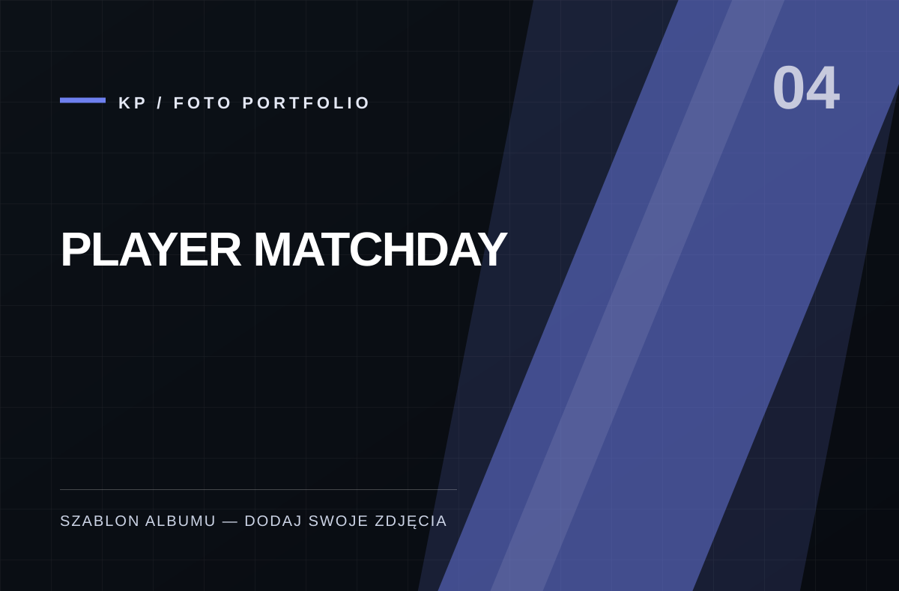

Meczowe fotoreportaże
Pojedynczy mecz = osobny album. Podział na rozgrywki, sezon i zespół.
OTWÓRZ ALBUM ↗Historie opowiedziane kadrami. Albumy układamy według meczów, wydarzeń i charakteru sesji, żeby łatwo było pokazywać konkretne realizacje.
Wybierz kategorię. Docelowo każdy mecz lub wydarzenie może mieć własną podstronę z datą, lokalizacją, rozgrywkami i wybranymi kadrami.
Pojedynczy mecz = osobny album. Podział na rozgrywki, sezon i zespół.
OTWÓRZ ALBUM ↗




W KP Services możesz połączyć pracę studia KACPY z technologią, zarządzaniem i obsługą wydarzeń. W konfiguratorze Media & Creative jest już zaznaczone.
ZBUDUJ ZAKRES WSPÓŁPRACY ↗